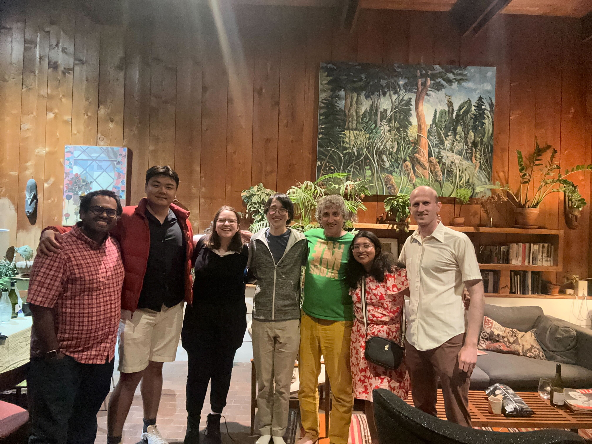

Latest Research
The Shavit Lab has significantly advanced the understanding of scalable algorithms and data structures essential for multi-core processors. In recent years, the lab has expanded into the burgeoning field of connectomics, where we apply our computational expertise to unravel the complexities of neural networks in the brain. By developing sophisticated algorithms for processing and analyzing large-scale neural data, our lab aims to reconstruct the intricate connectivity patterns of the brain with high precision. Additionally, the lab studies techniques to make large machine learning models more efficient by leveraging sparsity, and how to ensure AI safety. Our interdisciplinary approach aims to advance both fields of neuroscience and artificial intelligence.
News
- May 29, 2024: Introducing Two New Papers: Tumma, Neehal, Kong, Linghao, Sawmya, Shashata, Wang, Tony T., Shavit, Nir. A connectomics-driven analysis reveals novel characterization of border regions in mouse visual cortex, bioRxiv:2024.05.24.595837, May 2024. Sawmya, Shashata, Kong, Linghao, Markov, Ilia, Alistarh, Dan, Shavit, Nir. Sparse Expansion and Neuronal Disentanglement, ArXiv:2405.15756, May 2024.
- May 28, 2024: We celebrated the end of the year with a delicious barbecue dinner! 